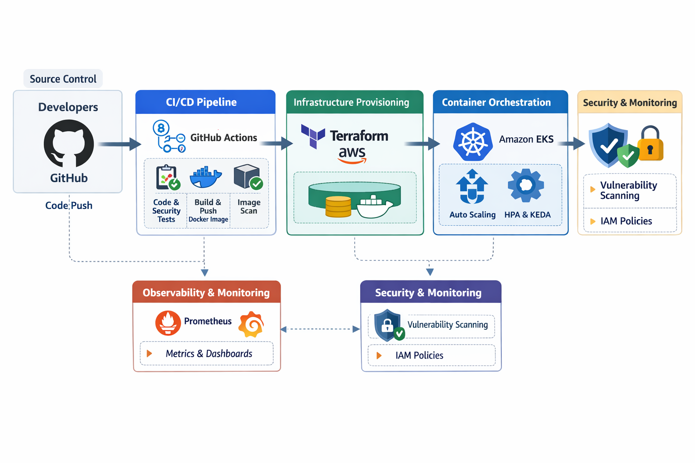

Automated AI chat application with robust DevSecOps integration.
Kubenix is a sophisticated, production-grade DevOps implementation designed to solve the complexities of deploying and scaling AI-driven microservices in a multi-environment cloud landscape. At its core, the project bridges the gap between Infrastructure-as-Code (IaC) and GitOps, utilizing Terraform to provision a resilient AWS EKS foundation across multi-availability zones.
The architecture is built on a "Security-First" CI/CD philosophy, where every commit undergoes a rigorous automated gauntlet within GitHub Actions—integrating static code analysis via SonarQube and container vulnerability shielding through Trivy. By implementing advanced orchestration patterns such as KEDA (Kubernetes Event-driven Autoscaling) and Helm-based package management, Kubenix ensures the application is not just deployed, but is self-healing, cost-optimized through AWS Spot Instances, and fully observable via a Prometheus and Grafana telemetry stack.
The system follows a cloud-native, CI/CD-driven microservices architecture designed for high availability, multi-layer security, and granular observability. By offloading infrastructure management to Terraform and orchestration to AWS EKS, the project achieves a seamless "Code-to-Cloud" transition.

High-Level End-to-End CI/CD & EKS Workflow
Full lifecycle automation from infrastructure provisioning to application deployment.
Native horizontal autoscaling at both the pod (HPA/KEDA) and node levels.
Implementing shift-left security with automated vulnerability gates in the CI/CD pipeline.
Metrics-driven monitoring and alerting for proactive system health management.
Leveraging AWS Spot Instances and KEDA scale-to-zero to minimize infrastructure overhead.
Ensuring consistency by replacing resources rather than modifying them, preventing config drift.
The cluster employs a multi-dimensional scaling approach to balance high availability with extreme cost-efficiency.
Designed to handle zero-traffic dormancy and sudden viral traffic spikes seamlessly.
Leveraging a Cloud-Native telemetry stack to ensure proactive incident management and deep performance insights.
Automated scraping of cluster-wide and application-specific metrics using service discovery.
By shifting security to the left, Kubenix ensures that vulnerabilities are caught in the development phase rather than in production.
Automated Trivy vulnerability scanning for container images and SonarQube quality gates to enforce clean, secure code before every merge.
Implementation of Least-Privilege IAM roles via OIDC for GitHub Actions and IRSA (IAM Roles for Service Accounts) within the EKS cluster.
Utilizing Terraform for reproducible environments and Immutable Docker images to prevent configuration drift across deployments.
Ready to automate and scale? Reach out!